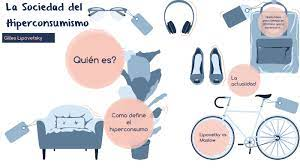
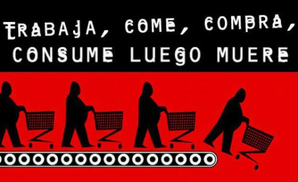

"UNA SOCIEDAD DE HIPERCONSUMO"
Es más que un hecho que vivimos en una sociedad de consumo masivo, sin embargo, considero que nos enfrentamos a un gran fenómeno, la sociedad ha cambiado, no es la misma de los años 50’s, por ende, el mercado y los consumidores, tampoco lo son y a lo largo de esta intervención quiero desglosar varias ideas que me permiten llegar a concluir que estamos ante una nueva sociedad o como la nombra Gilles Lipovetsky (2013), una sociedad de hiperconsumo.
Antes de hablar acerca de este nuevo fenómeno, es importante conocer de donde surgen las sociedades de consumo masivo, y el contexto histórico en el que se sitúan, pues este afecta fuertemente sus características. Cuando hablamos de consumo masivo, podemos, según Gilles Lipovetsky (2013), situar tres grandes épocas:
La primera, que abarca desde 1880 hasta el fin de la segunda guerra mundial, es la fase de la creación de la producción masiva de productos, quien, a su vez, viene acompañada de una nueva filosofía comercial, que es la búsqueda de una ganancia a través del volumen de producción con precios de fabricación bajos, sin embargo, en esta primera etapa el capitalismo de consumo era notablemente elitista.
La segunda etapa, en cambio, abarca desde la década de los cincuenta hasta finalizando los setenta, esta es una sociedad de consumo más generalizada, en donde los productos están mas o menos dentro de los grupos sociales, es decir, dejo de estar en manos de los ricos el acceso a un coche, a un refrigerador y paso a ser algo común dentro del pópulo.
Sin embargo, hay que decirlo, la segunda fase acabó. Estamos, según Lipovetsky (2013), en la tercera fase, que el filósofo denominó como “sociedad de hiperconsumo”, fenómeno que se viene presentando desde los 80´s y se caracteriza por la aparición de un concepto llamado “pluriequipo” dentro de los hogares, esto hace referencia a varios productos dentro de un mismo hogar, si antes se pensaba que debía ser un producto por hogar, ahora vemos todo lo contrario, en un hogar hay más de un televisor, más de un computador, tal vez varios carros, y el más notorio de los ejemplos es el teléfono móvil, la lógica de consumo se ha transformado, podríamos afirmar que ha cambiado pues, se concibe ahora dentro del mercado que se debe producir para un consumidor individualizado y abierto a nuevas experiencias personales, esto por supuesto ha tenido consecuencias dentro de nuestras sociedades, entre ellas el incremento del individualismo.
Los comportamientos de consumo en el pasado eran bastante marcados por las costumbres y la cultura de clases, un gran ejemplo de esto seria que una mujer, en la década de los 50´s, perteneciente a la clase trabajadora se comprara un vestido, un sombrero y zapatos no acordes, según la época, a su clase social, esto haría que sobre ella recayera mucha presión colectiva, dentro de una clasificación y un control que se tenía sobre las masas, el cual radicaba en privar de una serie de libertades individuales a las personas, infundiéndoles la idea de que no podían aspirar a más, pues la clase social a la que pertenecían definía todo sobre esa persona, su forma de vestir, de hablar, lo que podía o no comprar y hasta el trato que recibiría, esto facilitaba a las grandes compañías diferenciar que era lo que compraban los adinerados, los de clase media y los del populo, facilitando el nicho de mercado que podría tener un producto, es decir, saber con exactitud quienes lo comprarían.
Plantear este tipo de estrategias de mercado resultaría inviable en nuestros días pues, ahora en todos los grupos sociales se expresan gustos por la moda y las grandes marcas, lo que dificulta saber quiénes van a ser unos posibles compradores y sobre todo tener un control sobre el comportamiento de las masas. Por ejemplo, quien no quisiera unos tenis Valentino, una gargantilla Cartier, un reloj Rolex, esto debido a que las antiguas barreras sociales han caído, la misma persona va a derrochar mucho dinero en un ámbito y al mismo tiempo ser bastante tacaña en otro aspecto.
En conclusión, el capitalismo es ahora desregularizado lo que aumenta la idea de un consumidor hiperindividualista, liberado de cualquier costumbre o barrera social, estamos entonces ante un consumidor flexible, nómada, fragmentado e impredecible, dependiente del mercado y aunque sea libre de escoger sus diversiones, esta cada vez mas dominado por el mercado ya que entre más autónomo sea un individuo más poder ejerce sobre este el mercado.